Welcome to October 2026. With the structure topped out at rooftop level, our work turns from building upward to finishing inward — facade, interiors, and the rooftop pool shell. And a different question moves to the front: of all the homes rising here, which one is actually yours? This month we introduce Personalized Matching — a way of choosing a residence that starts not with a floor plan, but with knowing yourself. We also bring you the latest EEC intelligence, including fresh market data showing Pattaya–Na Jomtien new-unit sales up 54.6%. ต้อนรับเดือนตุลาคม 2569 เมื่อโครงสร้างปิดยอดถึงชั้นดาดฟ้าเรียบร้อยแล้ว งานจึงเปลี่ยนจากการสร้างขึ้นไปข้างบน มาเป็นการเก็บงานเข้าข้างใน ทั้งงานเปลือกอาคาร งานตกแต่งภายใน และโครงสร้างสระลอยฟ้า พร้อมกันนั้นคำถามใหม่ก็ขยับมาอยู่ข้างหน้า — ในบรรดาห้องทั้งหมดที่กำลังก่อร่างขึ้นที่นี่ ห้องไหนคือของคุณจริงๆ ฉบับนี้เราขอแนะนำบริการ Personalized Matching การเลือกที่อยู่อาศัยที่เริ่มต้นจากการรู้จักตัวเอง ไม่ใช่จากผังห้อง พร้อมอัปเดต EEC ล่าสุด รวมถึงตัวเลขตลาดที่ชี้ว่ายอดขายหน่วยใหม่โซนพัทยา–นาจอมเทียนโตขึ้น 54.6% 欢迎来到2026年10月。主体结构已封顶至屋顶层，工作重心从向上建造转向向内收尾：幕墙、室内装修与高空泳池结构。与此同时，一个新的问题浮现出来——在这里拔地而起的所有住宅中，哪一间才真正属于你？本期，我们正式推出 Personalized Matching 个性化匹配服务：选择住所，不从户型图开始，而从认识自己开始。此外还有EEC最新情报，包括芭提雅–那中天区域新房销量增长54.6%的市场数据。 Добро пожаловать в октябрь 2026 года. Каркас доведён до уровня кровли, и работа смещается от строительства вверх к отделке внутри: фасад, интерьеры и чаша высотного бассейна. Одновременно на первый план выходит другой вопрос: из всех домов, что растут здесь, какой из них действительно ваш? В этом выпуске мы представляем Personalized Matching — подход к выбору жилья, который начинается не с плана этажа, а со знания себя. А также свежая аналитика EEC, включая рост продаж новых юнитов в зоне Паттайя–На Джомтьен на 54,6%.
Why personality shapes where you should live — and how Personalized Matching finds the residence that fits your real life: your happiness, your comfort, and the orientation that feels right to you. ทำไมบุคลิกภาพจึงสำคัญกับการเลือกที่อยู่อาศัย และบริการ Personalized Matching ช่วยให้คุณได้ห้องที่ตอบโจทย์ชีวิตจริงได้อย่างไร ทั้งความสุข ความสบาย และโชคลาภ 为何性格决定你该住在哪里——以及个性化匹配如何为你找到契合真实生活的居所：幸福感、舒适度，以及合乎心意的朝向与风水。 Почему характер определяет, где вам стоит жить, и как Personalized Matching подбирает дом под вашу реальную жизнь: радость, комфорт и правильную ориентацию.


Hover to pause • click any photo to enlarge วางเมาส์เพื่อหยุดภาพ • แตะที่รูปเพื่อดูขนาดเต็ม 悬停暂停 • 点击图片放大 Наведите, чтобы остановить • нажмите, чтобы увеличить
For a look back at the Topping Out Ceremony of 28 August, see the September 2026 issue.
ความคืบหน้าประจำเดือน: หลังโครงสร้างอาคารขึ้นครบความสูงตั้งแต่พิธีปิดยอดอาคารเมื่อเดือนที่แล้ว หน้างานได้เข้าสู่จังหวะปกติของระยะงานเก็บรายละเอียด จากงานเทพื้นทีละชั้น ตอนนี้เปลี่ยนมาเป็นงานปิดผิวอาคารและงานตกแต่งภายใน โดยมีงานหลัก 3 ส่วนเดินหน้าไปพร้อมกัน:ย้อนชมพิธีปิดยอดอาคารเมื่อวันที่ 28 สิงหาคมได้ในฉบับเดือนกันยายน 2569
本月工地动态: 自上月封顶仪式以来，主体结构已达全部高度，工地进入收尾阶段的常态节奏。工作重点已从逐层浇筑楼板，转向外立面封闭与室内装修，目前三大工序同步推进：回顾8月28日的封顶仪式，请阅读2026年9月刊。
В этом месяце на площадке: После прошлого месяца, когда каркас достиг полной высоты на церемонии Topping Out, площадка вошла в ровный ритм этапа отделки. Работы сместились от заливки перекрытий к закрытию контура и внутренней отделке — три направления идут параллельно:Вспомнить церемонию Topping Out 28 августа можно в выпуске за сентябрь 2026.
From vision… to reality. จากวิสัยทัศน์… สู่ความเป็นจริง 从愿景… 到现实。 От замысла… к реальности.
From foundation… to the Jomtien skyline. จากรากฐาน… สู่เส้นขอบฟ้าจอมเทียน 从根基… 到中天天际线。 От фундамента… к горизонту Джомтьена.
THE STRUCTURE IS UP
— NOW WE PERFECT THE DETAILS.
Most people choose a home by square metres and price. But the residence you actually enjoy living in depends on something less visible: how you recharge, how you decide, and what makes a space feel right to you. Personalized Matching reads those signals first — then points to the floor, the view and the layout that fit. คนส่วนใหญ่เลือกบ้านจากขนาดและราคา แต่ห้องที่อยู่แล้วมีความสุขจริงๆ กลับขึ้นอยู่กับสิ่งที่มองไม่เห็น — คุณเติมพลังอย่างไร ตัดสินใจแบบไหน และอะไรที่ทำให้พื้นที่หนึ่ง "ใช่" สำหรับคุณ Personalized Matching เริ่มจากการอ่านสัญญาณเหล่านั้นก่อน แล้วจึงชี้ไปที่ชั้น วิว และผังห้องที่เหมาะกับคุณ 多数人挑选住宅，看的是面积与价格。但真正住得舒心的家，取决于更隐性的东西：你如何恢复精力、如何做决定，以及什么样的空间让你感到「对」。个性化匹配先读懂这些讯号，再为你指出合适的楼层、景观与户型。 Большинство выбирает жильё по метражу и цене. Но дом, в котором действительно хорошо жить, зависит от менее заметного: как вы восстанавливаете силы, как принимаете решения и что делает пространство «вашим». Personalized Matching сначала считывает эти сигналы — и только затем указывает на этаж, вид и планировку.


Your personality decides which zone, floor and level of privacy will actually suit you — and which facilities you will genuinely use. บุคลิกภาพของคุณมีผลมากกว่าที่คิด ทั้งกับโซน ชั้น และระดับความเป็นส่วนตัวที่เหมาะกับคุณ รวมถึงสิ่งอำนวยความสะดวกที่คุณจะได้ใช้จริง ไม่ใช่แค่มีไว้เฉยๆ 你的性格决定哪个区域、哪一层、何种私密程度真正适合你，以及哪些设施你会真正使用。 Ваш характер определяет, какая зона, этаж и степень приватности вам подходят — и какими удобствами вы будете пользоваться на самом деле.
Your daily routine decides the layout: where the light falls, how far you walk, how quiet the corridor is, where you put your things. กิจวัตรประจำวันคือสิ่งที่บอกว่าผังห้องแบบไหนเข้ากับคุณ: แสงตกตรงไหน เดินไกลแค่ไหน ทางเดินเงียบพอไหม และของจะเก็บไว้ตรงไหน 日常作息决定户型：光线落在何处、步行距离多远、走廊是否安静、收纳空间在哪里。 Ваш распорядок определяет планировку: куда падает свет, сколько идти, насколько тих коридор, где хранить вещи.
Which way the unit faces shapes the light through the day, the sea breeze, and how open the outlook feels from your balcony. ทิศของห้องกำหนดทั้งแสงตลอดวัน ลมทะเล และมุมมองจากระเบียง รวมถึงเลขชั้นและตำแหน่งประตู-ระเบียงตามหลักฮวงจุ้ยที่หลายท่านให้ความสำคัญ 房屋朝向决定全天采光、海风走向与阳台视野的开阔感；楼层数字与门、阳台的位置，也是许多买家依风水考量的重点。 Ориентация юнита определяет свет в течение дня, морской бриз и то, насколько открытым ощущается вид с балкона.
Driven by height, perspective and what comes next. You judge a home by its outlook — literally and figuratively — and you want a space that supports how you work and think. คุณถูกดึงดูดด้วยความสูง มุมมอง และสิ่งที่จะเกิดขึ้นข้างหน้า คุณตัดสินบ้านจาก "วิว" ทั้งในความหมายตรงและในแง่ศักยภาพ และอยากได้พื้นที่ที่รองรับวิธีทำงานและวิธีคิดของคุณ 你被高度、视野与「接下来会发生什么」所驱动。你以格局评判一个家——既是实景视野，也是未来潜力——并需要能承载工作与思考的空间。 Вас ведут высота, перспектива и то, что будет дальше. Дом вы оцениваете по обзору — и буквально, и в смысле потенциала — и вам нужно пространство для работы и размышлений.
Stability, function and things that work. You want a home that is easy to run day after day, with storage that makes sense and numbers that add up. คุณให้ความสำคัญกับความมั่นคง ฟังก์ชัน และสิ่งที่ใช้งานได้จริง อยากได้บ้านที่ดูแลง่ายในทุกๆ วัน มีที่เก็บของที่พอดี ค่าใช้จ่ายที่คาดเดาได้ และไม่มีอะไรที่ต้องคอยฝืนใช้ 你重视稳定、功能与「真正好用」。你要的是一个日复一日都容易打理的家：收纳合理，账也算得过来。 Стабильность, функциональность и то, что работает. Вам нужен дом, которым легко управлять каждый день: продуманное хранение и понятная математика.
Atmosphere over specification. You remember how a room felt at seven in the morning, not how many square metres it was. Quiet, light and nature matter most. สำหรับคุณ บรรยากาศสำคัญกว่าสเปก คุณจำได้ว่าห้องนั้นให้ความรู้สึกอย่างไรตอนเจ็ดโมงเช้า มากกว่าจำว่ามันกี่ตารางเมตร ความเงียบ แสง และธรรมชาติคือสิ่งที่คุณมองหาก่อน 氛围重于规格。你记得的是清晨七点那个房间的感觉，而不是它有几平方米。安静、光线与自然，对你最重要。 Атмосфера важнее спецификаций. Вы помните, каким было ощущение в комнате в семь утра, а не её метраж. Тишина, свет и природа — главное.
A base camp, not a nest. You are out more than in — beach, gym, friends, travel — and you want a home that is effortless to lock up and leave, and easy to share. บ้านคือจุดตั้งต้นของวัน ไม่ใช่ที่ที่ใช้เวลาทั้งวัน คุณอยู่ข้างนอกมากกว่าข้างใน ทั้งชายหาด ฟิตเนส เพื่อนฝูง และการเดินทาง ห้องจึงควรล็อกแล้วออกไปได้อย่างสบายใจ และแบ่งให้คนอื่นใช้ต่อได้ง่าย 家是基地，不是巢穴。你在外的时间多过在内——海滩、健身、朋友、旅行——因此需要一个锁门即走、也便于分享出租的居所。 Дом как база, а не гнездо. Вы чаще снаружи — пляж, зал, друзья, поездки — и вам нужен дом, который легко запереть и уехать, и легко сдавать.
From the Wave Pool to the 51st Floor — a Resort Stacked in the Sky จาก Wave Pool ชั้นล่าง สู่สระลอยฟ้าชั้น 51 — รีสอร์ตที่เรียงซ้อนขึ้นไปบนฟ้า 从地面造浪池到51层——一座叠向天空的度假村 От волнового бассейна до 51 этажа — курорт, поднятый в небо
With the structure now topped out, every amenity floor exists in concrete — the question is no longer whether it will be built, but which floor you will use most. Here is the whole resort, level by level, from the new October brochure, with the temperament code that suits each space. เมื่อโครงสร้างขึ้นครบทุกชั้นแล้ว ทุกชั้นสิ่งอำนวยความสะดวกก็มีตัวตนจริงในเนื้อคอนกรีต คำถามจึงไม่ใช่ว่าจะสร้างเสร็จไหม แต่เป็นว่าชั้นไหนที่คุณจะใช้บ่อยที่สุด ฉบับนี้เราพาไปดูรีสอร์ตทั้งหลังทีละชั้น ตามโบรชัวร์ฉบับใหม่เดือนตุลาคม พร้อมรหัสกลุ่มบุคลิกที่เข้ากับแต่ละพื้นที่ 主体结构已经封顶，每一层设施楼层都已真实存在于混凝土之中——问题不再是「会不会建成」，而是「你最常去哪一层」。本期依据十月最新宣传册，逐层呈现整座度假村，并标注最契合每个空间的性格类型。 Каркас завершён, и каждый этаж с удобствами уже существует в бетоне — вопрос не в том, будет ли он построен, а в том, каким этажом вы будете пользоваться чаще всего. Ниже — весь курорт по уровням, по новой октябрьской брошюре, с кодом темперамента для каждого пространства.
Jomtien Vibe & The Jewel of the Sea
P = rooftop of the additional 2-storey car parkP = ดาดฟ้าอาคารจอดรถ 2 ชั้นP = 两层附加停车楼屋顶P = крыша дополнительного 2-этажного паркинга
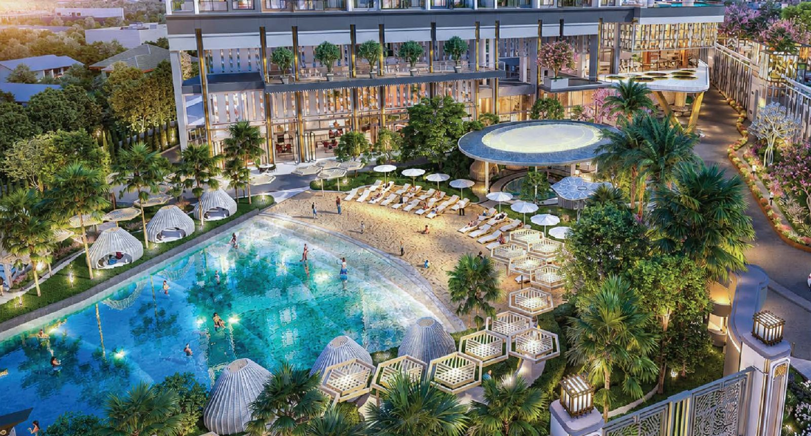
Ground Floorชั้น G地面层1 этажThe front-zone showpiece: a sandy-edged wave pool with its own Jacuzzi, a pool bar and beach club, cabanas and tropical gardens — with the real Jomtien Beach just steps away. ไฮไลต์ของโซนด้านหน้า: Wave Pool ขอบหาดทรายพร้อมจากุซซี่ พูลบาร์และ Beach Club ศาลาพักผ่อน และสวนทรอปิคอล — ส่วนหาดจอมเทียนตัวจริงก็อยู่ห่างออกไปเพียงไม่กี่ก้าว 前区的亮点：沙岸造浪池配按摩池、池畔酒吧与海滩俱乐部、休憩凉亭与热带花园——真正的中天海滩也仅数步之遥。 Главная сцена передней зоны: волновой бассейн с песчаным краем и собственным джакузи, пул-бар и пляжный клуб, кабаны и тропический сад — а настоящий пляж Джомтьен в нескольких шагах.
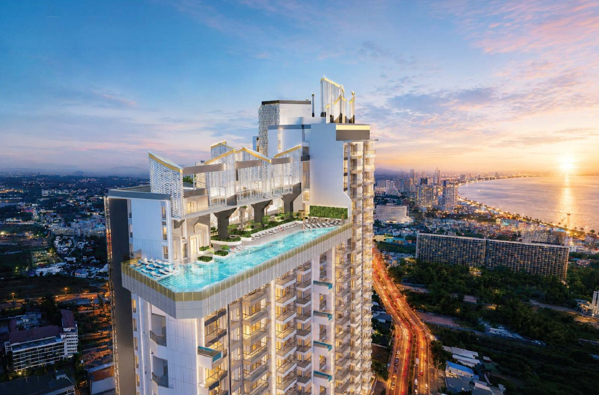
51st Floorชั้น 5151层51 этажSwim 45 metres along the edge of the sky, with Jomtien Bay stretched out below. The pool that now sits on the topped-out structure is the building’s signature. ว่ายน้ำ 45 เมตรเลียบขอบฟ้า มองลงไปเห็นอ่าวจอมเทียนทอดยาวอยู่ด้านล่าง สระนี้คือซิกเนเจอร์ของอาคาร และตอนนี้ตั้งอยู่บนโครงสร้างที่ขึ้นครบทุกชั้นแล้ว 沿着天际线畅游45米，脚下是绵延的中天湾。这座泳池是整栋大楼的标志，如今已坐落在封顶的主体结构之上。 Плывите 45 метров вдоль края неба, а под вами — залив Джомтьен. Этот бассейн — визитная карточка здания, и теперь он стоит на завершённом каркасе.
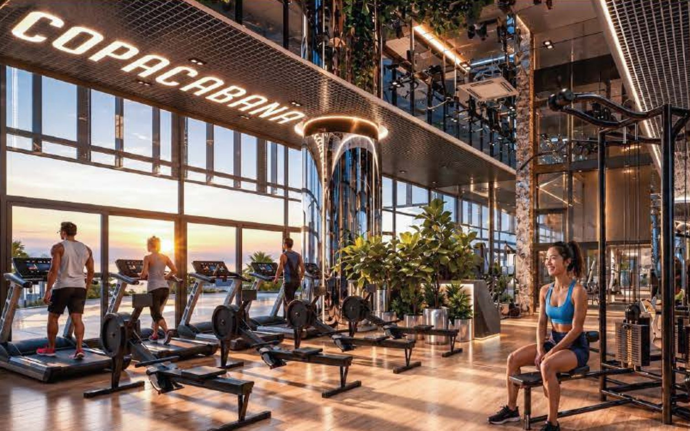
3rd Floorชั้น 33层3 этажA 487-square-metre gym with an artistic, double-height interior and panoramic views — low enough in the building that a workout never feels like a trip. ฟิตเนสขนาด 487 ตร.ม. ตกแต่งอย่างมีศิลปะ เพดานสูงโปร่ง พร้อมวิวพาโนรามา และอยู่ชั้นต่ำพอที่การลงมาออกกำลังกายไม่รู้สึกเหมือนต้องเดินทาง 487平方米的健身房，艺术感设计、挑高空间与全景视野——楼层够低，下楼训练从不像一趟远行。 Зал площадью 487 м² с художественным интерьером двойной высоты и панорамными видами — достаточно низко, чтобы тренировка не превращалась в поездку.
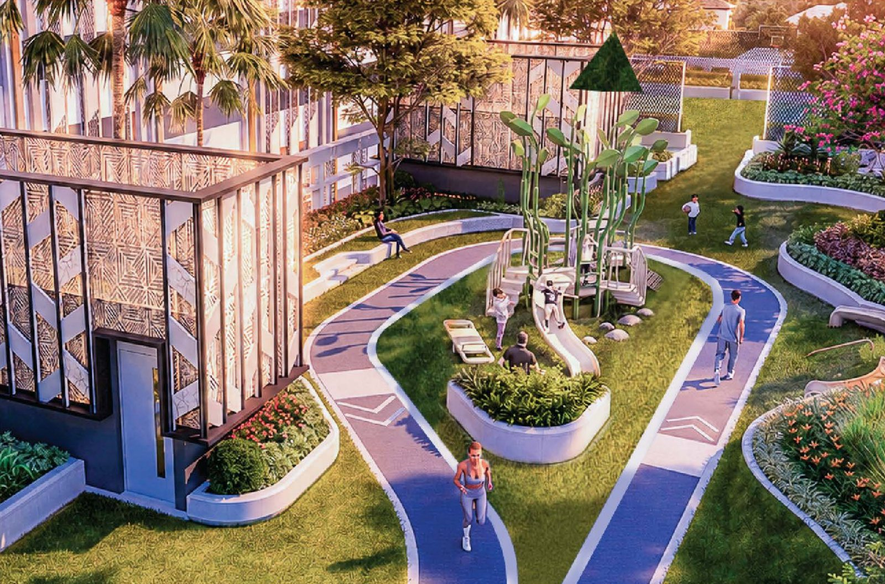
Parking Rooftopดาดฟ้าอาคารจอดรถ停车楼屋顶Крыша паркингаOn top of the additional two-storey car park: a landscaped running track looping past a relaxing area and a children’s playground — morning laps while the kids climb. บนดาดฟ้าอาคารจอดรถ 2 ชั้น มีลู่วิ่งท่ามกลางสวนที่วนผ่านมุมพักผ่อนและสนามเด็กเล่น — ผู้ใหญ่วิ่งรอบเช้า เด็กๆ ก็ได้ปีนป่ายไปพร้อมกัน 在附加的两层停车楼屋顶上：一条景观跑道环绕休憩区与儿童游乐场——大人晨跑，孩子攀爬。 На крыше дополнительного двухэтажного паркинга — беговая дорожка среди зелени, зона отдыха и детская площадка: взрослые бегают, дети лазают.
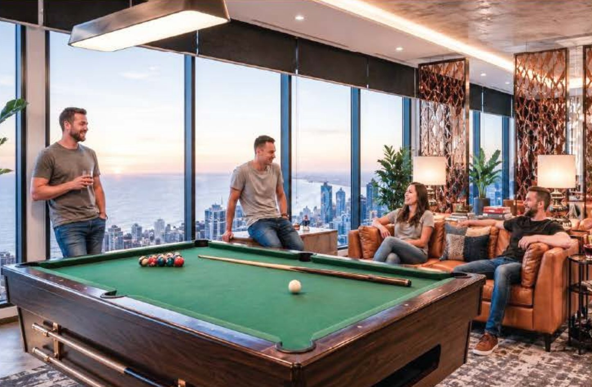
50th Floorชั้น 5050层50 этажThe rooftop Sky Park brings together an entertainment room with a pool table, an elegant lounge, a meeting room, a co-working space and a relaxing garden — all with the city and sea at your back. Sky Park บนดาดฟ้ารวมห้องเอนเตอร์เทนเมนต์พร้อมโต๊ะพูล เลานจ์หรูหรา ห้องประชุม Co-Working Space และสวนพักผ่อนไว้ในชั้นเดียว โดยมีวิวเมืองและทะเลเป็นฉากหลัง 屋顶空中花园汇集娱乐室（配台球桌）、优雅休息厅、会议室、共享办公区与休闲花园——城市与海景尽在身后。 Sky Park на крыше объединяет комнату развлечений с бильярдом, элегантный лаунж, переговорную, коворкинг и сад для отдыха — с видом на город и море.
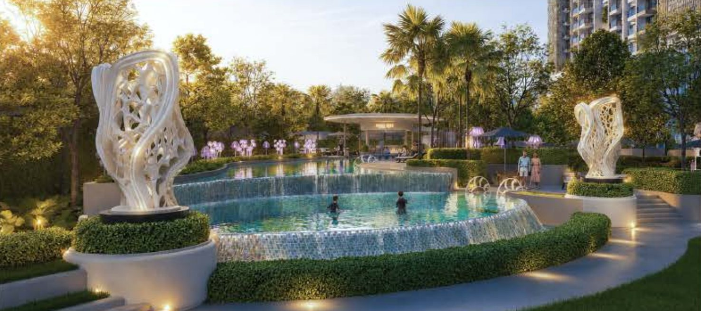
Ground Floorชั้น G地面层1 этажThe calmer rear zone: a sculpted garden pool, a children’s pool, a multi-purpose lawn and a dedicated Kids’ Club — family time without leaving the grounds. โซนด้านหลังที่สงบกว่า มี Garden Pool ประดับประติมากรรม สระเด็ก สนามหญ้าอเนกประสงค์ และ Kids’ Club — ใช้เวลากับครอบครัวได้เต็มที่โดยไม่ต้องออกนอกโครงการ 更宁静的后区：雕塑花园泳池、儿童泳池、多功能草坪与专属儿童俱乐部——不出园区就能享受家庭时光。 Более спокойная задняя зона: садовый бассейн со скульптурами, детский бассейн, лужайка и отдельный детский клуб — семейное время, не выходя за ворота.
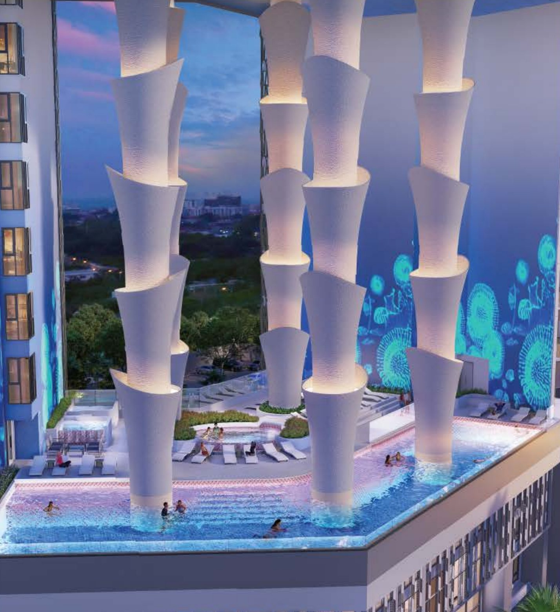
6th Floorชั้น 66层6 этажThe building’s namesake: a pool framed by towering coral-inspired columns and glowing sea-life walls, with its own Jacuzzi — the quiet heart of the wellness floor. สระที่เป็นที่มาของชื่อโครงการ ล้อมรอบด้วยเสาสูงที่ได้แรงบันดาลใจจากปะการัง และผนังเรืองแสงลวดลายสิ่งมีชีวิตใต้ทะเล พร้อมจากุซซี่ในตัว — หัวใจอันเงียบสงบของชั้นสุขภาพ 项目的名字由此而来：高耸的珊瑚造型立柱与发光的海洋生物墙环绕泳池，并配有按摩池——康养楼层宁静的核心。 Бассейн, давший имя проекту: высокие колонны в форме кораллов, светящиеся стены с морскими мотивами и собственный джакузи — тихое сердце велнес-этажа.
 6th Floorชั้น 66层6 этаж
6th Floorชั้น 66层6 этаж
An authentic Japanese-style onsen beside the Coral Pool’s Jacuzzi — the place to let the day go. ออนเซ็นสไตล์ญี่ปุ่นแบบต้นตำรับ อยู่ติดกับจากุซซี่ของ The Coral Pool — มุมที่ปล่อยให้ความเหนื่อยทั้งวันละลายหายไป 正宗日式温泉紧邻珊瑚泳池的按摩池——放下一天疲惫的地方。 Настоящий онсэн в японском стиле рядом с джакузи The Coral Pool — место, где отпускает весь день.
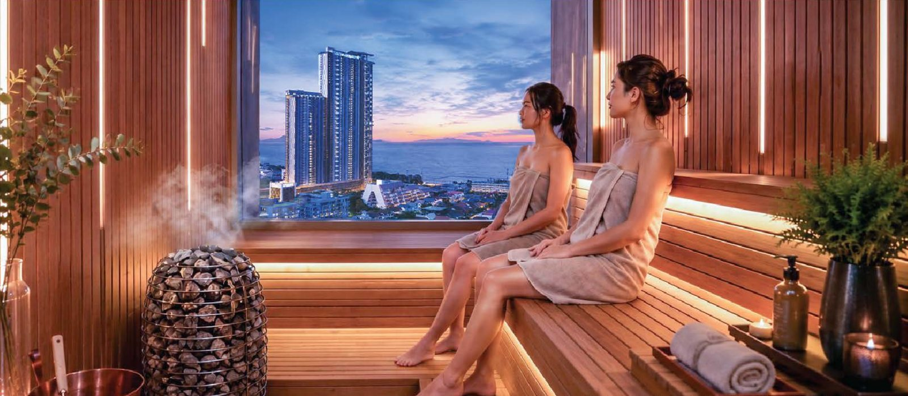
6th Floorชั้น 66层6 этажWarm timber, soft light and a window onto the sea: a sauna and steam room to finish every session. ไม้โทนอุ่น แสงนุ่ม และหน้าต่างที่มองเห็นทะเล ห้องซาวน่าและห้องอบไอน้ำสำหรับปิดท้ายทุกวัน 温润木质、柔和灯光，窗外是大海：以桑拿与蒸汽房为每一天收尾。 Тёплое дерево, мягкий свет и окно на море: сауна и хаммам, чтобы завершить любой день.
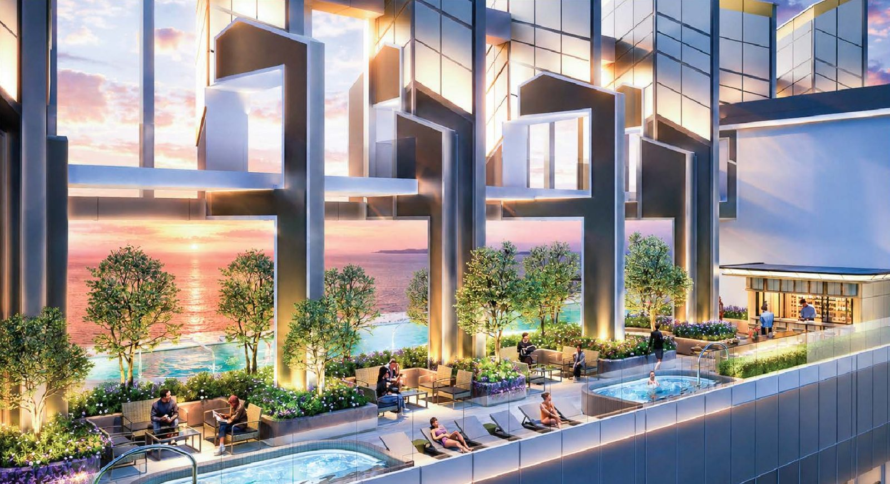
51st Floorชั้น 5151层51 этажBeside the lap pool, a bar and Jacuzzis face west over the Gulf — built for the hour when Jomtien turns gold. ข้างสระ Lap Pool มีบาร์และจากุซซี่หันหน้าไปทางทิศตะวันตกเหนืออ่าวไทย สร้างมาเพื่อช่วงเวลาที่จอมเทียนกลายเป็นสีทอง 在泳池旁，酒吧与按摩池面朝西方的泰国湾——专为中天染上金色的那一刻而建。 Рядом с бассейном — бар и джакузи с видом на запад, на залив: для того часа, когда Джомтьен становится золотым.
 Throughoutทั่วทั้งอาคาร遍布全楼По всему зданию
Throughoutทั่วทั้งอาคาร遍布全楼По всему зданию
Thirty-two green pockets spread through the building, so there is always somewhere quiet within a short walk of your door. พื้นที่สีเขียว 32 จุดกระจายอยู่ทั่วอาคาร ไม่ว่าจะอยู่ชั้นไหน ก็มีมุมสงบให้พักได้ในระยะเดินไม่ไกลจากหน้าห้อง 32处绿意空间分布于整栋大楼，无论住在哪一层，走几步就有安静的角落。 Тридцать два зелёных уголка по всему зданию — где бы вы ни жили, тихое место всегда рядом.
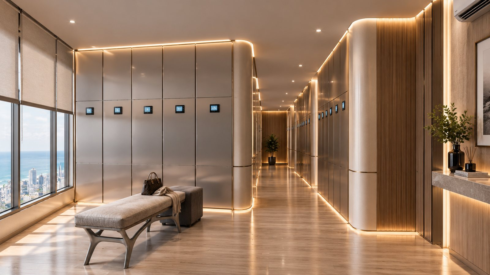
Everyday Easeความสะดวกทุกวัน日常便利Каждый день24-hour security and concierge, smart parcel lockers, 14 elevators from a grand high-ceiling lobby, and free Wi-Fi in every common area. รปภ.และ Concierge ตลอด 24 ชั่วโมง ตู้ล็อกเกอร์รับพัสดุอัจฉริยะ ลิฟต์ 14 ตัวจากล็อบบี้เพดานสูงโอ่อ่า และ Wi-Fi ฟรีในทุกพื้นที่ส่วนกลาง 24小时安保与礼宾服务、智能包裹储物柜、宏伟挑高大堂配14部电梯，以及所有公共区域免费Wi-Fi。 Охрана и консьерж 24/7, смарт-локеры для посылок, 14 лифтов из высокого парадного лобби и бесплатный Wi-Fi во всех общих зонах.
Images from the October 2026 brochure are early architectural renderings and may be subject to change. ภาพจากโบรชัวร์ฉบับตุลาคม 2569 เป็นภาพจำลองทางสถาปัตยกรรมเบื้องต้น และอาจมีการเปลี่ยนแปลง 图片取自2026年10月宣传册，为早期建筑效果图，可能有所调整。 Изображения из брошюры за октябрь 2026 года — предварительные архитектурные визуализации и могут измениться.
Last month we looked at the ground beneath the tower. This month the weather asked the question for us: from 24 to 27 September the same storm system drenched Bangkok, Pattaya and Jomtien. How each place coped says more about location than any brochure can. Here is what happened — and why Jomtien, where Copacabana Coral Reef stands, fared differently. ฉบับที่แล้วเราพาไปดูผืนดินใต้ตัวอาคาร ฉบับนี้ธรรมชาติเป็นผู้ตั้งคำถามให้เราเอง ระหว่างวันที่ 24–27 กันยายน พายุฝนระลอกเดียวกันตกหนักทั้งกรุงเทพฯ พัทยา และจอมเทียน การที่แต่ละพื้นที่รับมือได้ต่างกัน บอกอะไรเกี่ยวกับทำเลได้มากกว่าโบรชัวร์ใดๆ นี่คือสิ่งที่เกิดขึ้น และเหตุผลว่าทำไมจอมเทียน ที่ตั้งของ Copacabana Coral Reef จึงผ่านมาได้ต่างจากที่อื่น 上期我们探讨了大楼脚下的地基。本期，天气替我们提出了问题：9月24日至27日，同一轮强降雨同时笼罩曼谷、芭提雅与中天。各地的应对差异，比任何宣传册都更能说明地段的意义。以下是事情的经过，以及 Copacabana Coral Reef 所在的中天为何表现不同。 В прошлом выпуске мы говорили о грунте под башней. В этом месяце вопрос задала сама погода: с 24 по 27 сентября одна и та же система ливней накрыла Бангкок, Паттайю и Джомтьен. То, как справилось каждое место, говорит о локации больше любой брошюры. Вот что произошло — и почему Джомтьен, где стоит Copacabana Coral Reef, пережил это иначе.
Our thoughts are with everyone in Bangkok, Pattaya and across Thailand affected by the late-September floods. ขอส่งกำลังใจถึงทุกท่านในกรุงเทพฯ พัทยา และทั่วประเทศ ที่ได้รับผลกระทบจากน้ำท่วมช่วงปลายเดือนกันยายน 谨向曼谷、芭提雅及泰国各地受九月下旬洪水影响的所有朋友致以慰问。 Мы думаем обо всех в Бангкоке, Паттайе и по всему Таиланду, кого затронули наводнения конца сентября.
Bangkok sits on a flat, low-lying river delta where rainwater has nowhere to run and must be pumped out. Central Pattaya catches the runoff from the higher ground of Pong and Nongprue as it pours west toward the sea. Jomtien lies south of Pratumnak Hill, away from that route, on a coastal strip where rain has only a short way to go to reach the Gulf. กรุงเทพฯ ตั้งอยู่บนที่ราบลุ่มปากแม่น้ำที่ต่ำและแบน น้ำฝนไม่มีทางไหลลงเองและต้องอาศัยการสูบออก พัทยากลางรับน้ำหลากจากที่สูงฝั่งโป่งและหนองปรือที่ไหลผ่านเมืองลงทะเลทางทิศตะวันตก ส่วนจอมเทียนอยู่ทางใต้ของเขาพระตำหนัก ห่างจากเส้นทางน้ำนั้น บนแนวชายฝั่งที่น้ำฝนใช้ระยะทางสั้นๆ ก็ถึงทะเล 曼谷坐落在地势低平的河口三角洲上，雨水无处自然流走，只能依靠抽排。中芭提雅则承接来自邦镇与农布鲁高地、一路向西奔流入海的径流。中天位于帕塔纳克山以南，远离这条水道，是一片雨水只需很短距离便能入海的沿岸地带。 Бангкок стоит на плоской низменной дельте, где дождевой воде некуда стекать и её приходится откачивать. Центральная Паттайя принимает сток с возвышенностей Понг и Нонгпруэ, идущий на запад к морю. Джомтьен лежит к югу от холма Пратамнак, в стороне от этого пути, на прибрежной полосе, где воде до залива совсем недалеко.
The difference is geography, not luck. What kept Jomtien steady this week — rain that drains to the sea by gravity, and a position away from the city’s main runoff path — belongs to the same story as the granite bedrock in Part 1: firm coastal ground, not a soft-clay delta. ความต่างนี้มาจากภูมิศาสตร์ ไม่ใช่โชค สิ่งที่ทำให้จอมเทียนรับมือได้ในสัปดาห์นี้ คือน้ำฝนที่ไหลลงทะเลได้เองตามธรรมชาติ และทำเลที่อยู่นอกเส้นทางน้ำหลักของเมือง ซึ่งเป็นเรื่องเดียวกับชั้นหินแกรนิตในตอนที่ 1 คือผืนดินชายฝั่งที่มั่นคง ไม่ใช่แอ่งดินเหนียวอ่อนของที่ราบลุ่ม 差异来自地理，而非运气。让中天本周保持稳定的因素——雨水依靠重力自然入海，且位置远离城市主要径流通道——与第一篇中的花岗岩基岩是同一个故事：坚实的沿海地基，而非软黏土三角洲。 Разница — в географии, а не в удаче. То, что помогло Джомтьену на этой неделе, — самотёчный сток в море и положение в стороне от главного пути воды, — это та же история, что и гранитное основание из первой части: прочный прибрежный грунт, а не мягкая глина дельты.
Honestly: Jomtien is not immune. In the most intense cloudbursts, streets here have held water for a short time (Dongtan Road, May 2025; the beach area, July 2026). Both episodes were traced to drain capacity and silt, and both were acted on. พูดกันตามจริง จอมเทียนไม่ได้ปลอดภัยร้อยเปอร์เซ็นต์ ในวันที่ฝนตกหนักผิดปกติ ถนนบางช่วงเคยมีน้ำขังชั่วคราว (ถนนดงตาล พฤษภาคม 2568 และบริเวณริมหาด กรกฎาคม 2569) ทั้งสองครั้งมีสาเหตุจากขีดความสามารถของท่อและตะกอนในท่อ และได้รับการแก้ไขแล้ว 坦白说：中天并非完全不受影响。在最强的暴雨中，这里的街道也曾短暂积水（2025年5月东丹路、2026年7月海滩一带）。两次都查明是管道容量与淤积所致，且均已处理。 Честно: абсолютной защиты нет. При самых сильных ливнях улицы здесь ненадолго подтапливало (Донгтан-роуд в мае 2025 года, пляжная зона в июле 2026-го). Оба случая связаны с пропускной способностью труб и илом — и оба устранены.
The Marine Department widened 3.5 km of Jomtien Beach to an average of 50 m (Phase 1, ฿586 million, handed to the city in 2022). Phase 2 — a further 2.85 km, ฿318 million — runs to July 2027. A wide beach is the first buffer against waves and erosion. กรมเจ้าท่าเติมทรายขยายหาดจอมเทียนยาว 3.5 กม. ให้กว้างเฉลี่ย 50 เมตร (เฟส 1 งบ 586 ล้านบาท ส่งมอบให้เมืองพัทยาดูแลตั้งแต่ปี 2565) และเฟส 2 อีก 2.85 กม. งบ 318 ล้านบาท กำหนดแล้วเสร็จกรกฎาคม 2570 หาดที่กว้างคือแนวกันชนด่านแรกต่อคลื่นและการกัดเซาะ 海事厅已将中天海滩3.5公里段平均拓宽至50米（第一期，5.86亿泰铢，2022年移交芭提雅市管理）。第二期再覆盖2.85公里，预算3.18亿泰铢，预计2027年7月完成。宽阔的海滩是抵御海浪与侵蚀的第一道缓冲。 Морской департамент расширил 3,5 км пляжа Джомтьен в среднем до 50 м (фаза 1, 586 млн бат, передана городу в 2022 году). Фаза 2 — ещё 2,85 км за 318 млн бат — до июля 2027 года. Широкий пляж — первый буфер от волн и эрозии.
The Gulf of Thailand lies west of the main typhoon track. Typhoon Gay in 1989 was the first to make landfall in Thailand since 1891 — and it struck Chumphon, far to the south. Even so, for a 55-storey tower on the coast, wind is a design load calculated floor by floor. อ่าวไทยอยู่ทางตะวันตกของเส้นทางไต้ฝุ่นหลัก ไต้ฝุ่นเกย์ในปี 2532 เป็นลูกแรกที่ขึ้นฝั่งประเทศไทยนับตั้งแต่ปี 2434 และขึ้นฝั่งที่ชุมพรซึ่งอยู่ไกลลงไปทางใต้ ถึงอย่างนั้น สำหรับอาคาร 55 ชั้นริมทะเล แรงลมก็ยังเป็นแรงที่ต้องคำนวณในการออกแบบทุกชั้น 泰国湾位于主要台风路径以西。1989年的台风「盖伊」是自1891年以来首个登陆泰国的台风，登陆地点是远在南部的春蓬。即便如此，对于一座海滨55层塔楼，风荷载仍是逐层计算的设计要素。 Сиамский залив лежит западнее основной траектории тайфунов. Тайфун «Гэй» в 1989 году стал первым с 1891 года, вышедшим на сушу в Таиланде, — и ударил по Чумпхону, далеко на юге. И всё же для 55-этажной башни на берегу ветер — расчётная нагрузка для каждого этажа.
The Gulf averages under 50 m deep, which dissipates tsunami energy, and seismologists put the only plausible source — the Manila Trench — at fewer than once in 400 years. The granite bedrock story is in Part 1. อ่าวไทยลึกเฉลี่ยไม่ถึง 50 เมตร ซึ่งช่วยสลายพลังงานของคลื่นสึนามิ และนักแผ่นดินไหววิทยาประเมินว่าแหล่งกำเนิดเดียวที่เป็นไปได้ คือร่องลึกมะนิลา มีโอกาสเกิดน้อยกว่า 1 ครั้งในรอบ 400 ปี ส่วนเรื่องชั้นหินแกรนิตอ่านได้ในตอนที่ 1 泰国湾平均水深不足50米，可消散海啸能量；地震学家认为唯一可能的源头——马尼拉海沟——发生频率低于每400年一次。花岗岩基岩的详细内容见第一篇。 Средняя глубина залива менее 50 м, что гасит энергию цунами, а единственный реальный источник — Манильский жёлоб — по оценке сейсмологов, срабатывает реже раза в 400 лет. О гранитном основании — в первой части.
These World Bank ratings cover the whole province, from Si Racha’s industrial estates to the eastern river basins — which is exactly why a specific location like Jomtien needs to be looked at on its own. ระดับจากธนาคารโลกนี้ประเมินทั้งจังหวัด ตั้งแต่นิคมอุตสาหกรรมศรีราชาไปจนถึงลุ่มน้ำด้านตะวันออก ซึ่งเป็นเหตุผลว่าทำไมทำเลเฉพาะอย่างจอมเทียนจึงต้องดูแยกเป็นรายพื้นที่ 世界银行的这些评级覆盖全府——从是拉差工业区到东部河流流域——正因如此，像中天这样的具体地段需要单独评估。 Эти рейтинги Всемирного банка охватывают всю провинцию — от промзон Шрирачи до восточных речных бассейнов, — поэтому конкретное место вроде Джомтьена нужно оценивать отдельно.
Our team will walk you through Copacabana Coral Reef’s answers to each one at the Sales Gallery. ทีมงานของเรายินดีอธิบายคำตอบของ Copacabana Coral Reef ในทุกข้อที่ Sales Gallery 我们的团队将在销售中心为您逐一讲解 Copacabana Coral Reef 的答案。 Наша команда разберёт ответы Copacabana Coral Reef по каждому пункту в Sales Gallery.
Sources:แหล่งข้อมูล:资料来源：Источники: CNN (Bangkok) • Thansettakij • Pattaya Mail (Sep 2026) • Jomtien drainage • The Pattaya News (Jul 2026) • Marine Dept. • ThinkHazard
As Bangkok runs up against the limits of its city plan, Thailand is building a new economic engine in Huai Yai, Bang Lamung — the same district as Jomtien. EEC City is planned across 15,000 rai with total investment put at ฿1.11 trillion: less a land project than an attempt to build the “Silicon Valley of the East” for the AI era. ในขณะที่กรุงเทพฯ เริ่มชนเพดานด้านผังเมืองและความแออัด ประเทศไทยกำลังเร่งสร้างเครื่องยนต์เศรษฐกิจตัวใหม่ที่ตำบลห้วยใหญ่ อำเภอบางละมุง ซึ่งเป็นอำเภอเดียวกับจอมเทียน EEC City วางแผนบนพื้นที่ 15,000 ไร่ มูลค่าการลงทุนรวมราว 1.11 ล้านล้านบาท นี่ไม่ใช่แค่โครงการจัดสรรที่ดิน แต่คือความพยายามสร้าง “Silicon Valley แห่งตะวันออก” สำหรับยุค AI 当曼谷的城市规划与拥堵逐渐触顶，泰国正在春武里府邦拉蒙县会艾镇——与中天同属一县——打造新的经济引擎。EEC City 规划占地15,000莱，总投资约1.11万亿泰铢：这不只是土地开发，而是要为AI时代打造一座「东方硅谷」。 Пока Бангкок упирается в пределы градостроительного плана и перегруженности, Таиланд строит новый экономический двигатель в Хуай Яй, район Бангламунг, — том же районе, что и Джомтьен. EEC City занимает 15 000 раев при общем объёме инвестиций около 1,11 трлн бат: это не просто земельный проект, а попытка создать «Кремниевую долину Востока» для эпохи ИИ.
Huai Yai’s land-use plan is being reset as a “Gateway to the Global Digital Economy” built on two industries. Close to international subsea-cable landing points, the area offers the low latency that AI, cloud and large data centres need; alongside it, the EEC Office plans a full medical ecosystem to draw world-class specialists. Phase 1 — 6,000 rai, initial development targeted for 2028 — is the test of whether global talent will settle here. ผังการใช้ที่ดินตำบลห้วยใหญ่กำลังถูกปรับให้เป็น “Gateway to the Global Digital Economy” บนสองอุตสาหกรรมหลัก ด้วยทำเลที่ใกล้จุดขึ้นฝั่งของเคเบิลใต้น้ำระหว่างประเทศ พื้นที่นี้จึงได้เปรียบด้าน Low Latency ซึ่งเป็นหัวใจของ AI, Cloud และ Data Center ขนาดใหญ่ ควบคู่กับแผนของ สกพอ. ที่จะสร้างระบบนิเวศการแพทย์ครบวงจรเพื่อดึงผู้เชี่ยวชาญระดับโลก เฟสแรก 6,000 ไร่ ซึ่งมีเป้าหมายพัฒนาเบื้องต้นให้เสร็จภายในปี 2571 จะเป็นบทพิสูจน์ว่า Talent จากทั่วโลกจะเลือกมาปักหลักที่นี่หรือไม่ 会艾镇的土地利用规划正被重新定位为「通往全球数字经济的门户」，以两大产业为核心。该区域靠近国际海底光缆登陆点，具备AI、云服务与大型数据中心所需的低延迟优势；与此同时，东部经济走廊办公室计划打造完整的医疗生态，吸引世界级专家。首期6,000莱预计于2028年完成初步开发，这将检验全球人才是否愿意在此扎根。 План землепользования Хуай Яй перенастраивается как «Ворота в глобальную цифровую экономику» на двух отраслях. Близость к точкам выхода международных подводных кабелей даёт низкую задержку, нужную ИИ, облакам и крупным дата-центрам; параллельно офис EEC планирует полноценную медицинскую экосистему для специалистов мирового уровня. Фаза 1 — 6 000 раев, первичная застройка к 2028 году — покажет, осядут ли здесь таланты со всего мира.
Instead of every utility digging its own trench, one private operator will run all ten systems under a single PPP — a deliberate break from the patchwork that left older Thai cities with roads dug up again and again. แทนที่แต่ละหน่วยงานจะต่างคนต่างขุดถนน เอกชนรายเดียวจะบริหารระบบสาธารณูปโภคทั้ง 10 ด้านภายใต้สัญญา PPP ฉบับเดียว เป็นการตั้งใจลบภาพการพัฒนาเมืองแบบแยกส่วนในอดีต ที่ทำให้ถนนถูกขุดซ้ำแล้วซ้ำเล่า 不再由各部门各自开挖道路，而是由单一私营运营商通过一份PPP合同统管全部十大系统——刻意告别过去各自为政、道路反复开挖的城市发展模式。 Вместо того чтобы каждая служба копала свою траншею, один частный оператор будет управлять всеми десятью системами по единому ГЧП — сознательный разрыв с лоскутным развитием, из-за которого дороги в старых городах вскрывали снова и снова.
Investors are watching a proposal to cut the design speed from 250 to 160 km/h. Strategists call it a “financial unlock”: lower construction and operating costs make the project easier for lenders to finance, turning a stalled dream into infrastructure that can actually be built. Japanese executives in Si Racha say 160 km/h is enough for business and daily life — if it comes with reliable timetables and seamless connections — though journeys would be somewhat longer. สิ่งที่นักลงทุนจับตาคือข้อเสนอลดความเร็วออกแบบจาก 250 เหลือ 160 กม./ชม. ในมุมนักกลยุทธ์ นี่คือ “Financial Unlock” ที่ช่วยลดต้นทุนก่อสร้างและเดินรถ ทำให้สถาบันการเงินอนุมัติสินเชื่อได้ง่ายขึ้น เปลี่ยนความฝันที่ติดหล่มให้กลายเป็นโครงสร้างพื้นฐานที่สร้างได้จริง ผู้บริหารชาวญี่ปุ่นในศรีราชามองว่า 160 กม./ชม. เพียงพอต่อการทำธุรกิจและใช้ชีวิต หากแลกมาด้วยตารางเวลาที่แน่นอนและการเชื่อมต่อไร้รอยต่อ แม้เวลาเดินทางจะนานขึ้นบ้าง 投资者正在关注一项将设计时速从250公里降至160公里的提案。在战略家看来，这是一次「财务解锁」：降低建设与运营成本，让金融机构更易放贷，把停滞的梦想变成真正可建的基础设施。是拉差的日本企业高管认为，只要换来准点可靠的班次与无缝衔接，160公里的时速足以满足商务与日常生活——尽管行程会稍长一些。 Инвесторы следят за предложением снизить проектную скорость с 250 до 160 км/ч. Стратеги называют это «финансовой разблокировкой»: ниже затраты на строительство и эксплуатацию — легче получить кредит, и застрявшая мечта становится реально строящейся инфраструктурой. Японские руководители в Шрирача считают, что 160 км/ч достаточно для бизнеса и жизни — если взамен будет надёжное расписание и бесшовные пересадки, пусть поездки и станут чуть дольше.
More than 15 groups from Japan, China and Taiwan have shown interest, alongside Thai alliances built for synergy: กลุ่มทุนกว่า 15 รายจากญี่ปุ่น จีน และไต้หวันให้ความสนใจ ควบคู่กับการจับมือของทุนไทยที่น่าจับตา: 超过15家来自日本、中国大陆与台湾的集团表达兴趣，泰国本土也形成了颇具看点的协同联盟： Интерес проявили более 15 групп из Японии, Китая и Тайваня, а также тайские альянсы, собранные ради синергии:
Once the concession is awarded and Phase 1 construction begins, 2027–2028 becomes the moment EEC City moves from plan to proof — the same window in which Copacabana Coral Reef is scheduled for completion at the end of 2027. The new city is being built in our own district, on the same coast; for residents, that means the people who will work there are also the neighbours, tenants and buyers of tomorrow. เมื่อการประมูลสัมปทานเสร็จสิ้นและเริ่มก่อสร้างเฟสแรก ช่วงปี 2570–2571 จะเป็นจังหวะที่ EEC City เปลี่ยนจากแผนงานเป็นของจริง ซึ่งตรงกับช่วงที่ Copacabana Coral Reef มีกำหนดแล้วเสร็จในปลายปี 2570 พอดี เมืองใหม่นี้กำลังเกิดขึ้นในอำเภอเดียวกับเรา บนชายฝั่งเดียวกัน สำหรับผู้อยู่อาศัย นั่นหมายความว่าคนที่จะมาทำงานที่นั่น ก็คือเพื่อนบ้าน ผู้เช่า และผู้ซื้อในวันข้างหน้า 特许经营权确定、首期工程开工之后，2027–2028年将是 EEC City 从规划走向兑现的关键时刻——恰好与 Copacabana Coral Reef 计划于2027年底竣工的时间重合。这座新城就建在我们所在的县、同一片海岸上；对住户而言，将在那里工作的人，也正是明天的邻居、租客与买家。 Когда концессия будет присуждена и начнётся строительство первой фазы, 2027–2028 годы станут моментом, когда EEC City перейдёт от плана к доказательствам, — в то же окно, когда Copacabana Coral Reef планируется завершить (конец 2027 года). Новый город строится в нашем же районе, на том же побережье; для жильцов это значит, что те, кто будет там работать, — это завтрашние соседи, арендаторы и покупатели.
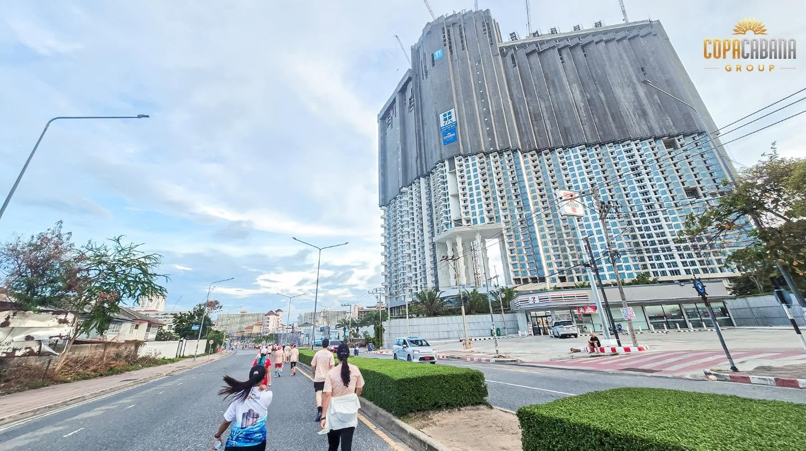
Copacabana Group was proud to be part of LOMA RUN ON THE BEACH 2026 — a charity run that brought together more than 2,500 runners to pass on the power of giving, give local tourism a lift, and add colour to another good day in Jomtien and Pattaya City. Copacabana Group ดีใจที่ได้เป็นส่วนหนึ่งของ LOMA RUN ON THE BEACH 2026 งานวิ่งการกุศลที่มีนักวิ่งกว่า 2,500 คนร่วมส่งต่อพลังแห่งการให้ พร้อมช่วยกระตุ้นการท่องเที่ยว และร่วมเติมสีสันให้กับอีกหนึ่งวันดีๆ ของจอมเทียนและเมืองพัทยา Copacabana Group 很荣幸参与 LOMA RUN ON THE BEACH 2026——这场慈善路跑汇聚了2,500多名跑者，一起传递给予的力量、带动本地旅游，并为中天与芭提雅市增添了又一个美好日子的色彩。 Copacabana Group с радостью стала частью LOMA RUN ON THE BEACH 2026 — благотворительного забега, собравшего более 2 500 бегунов, чтобы передать силу добра, поддержать туризм и добавить красок ещё одному хорошему дню Джомтьена и Паттайи.
The route ran along the Jomtien coast and right past the Copacabana Coral Reef Jomtien construction site — a morning when the neighbourhood our future residents will call home came out in force. เส้นทางวิ่งเลียบชายฝั่งจอมเทียนและผ่านหน้าโครงการ Copacabana Coral Reef Jomtien ที่กำลังก่อสร้าง เป็นเช้าที่ชุมชนซึ่งลูกบ้านในอนาคตของเราจะได้เรียกว่าบ้าน ออกมาร่วมกันอย่างคึกคัก 赛道沿中天海岸延伸，途经正在建设中的 Copacabana Coral Reef Jomtien 项目——在这个清晨，未来住户将称之为家的街区热闹非凡。 Маршрут шёл вдоль побережья Джомтьена прямо мимо стройплощадки Copacabana Coral Reef Jomtien — утро, когда район, который наши будущие жильцы назовут домом, вышел на улицы.
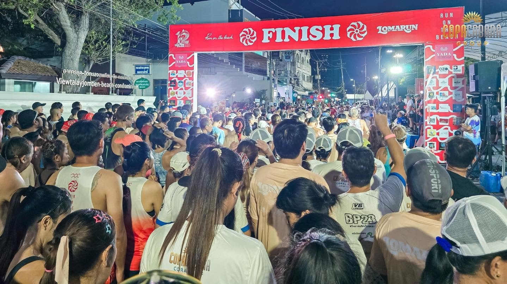
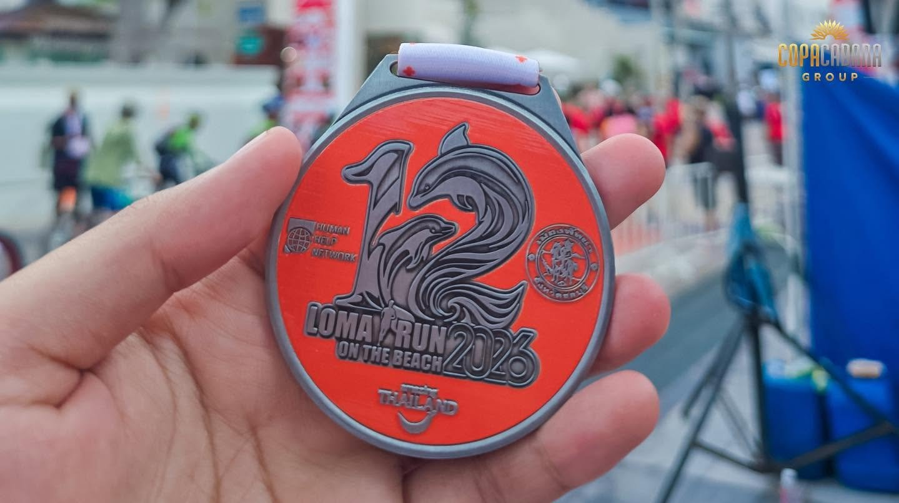
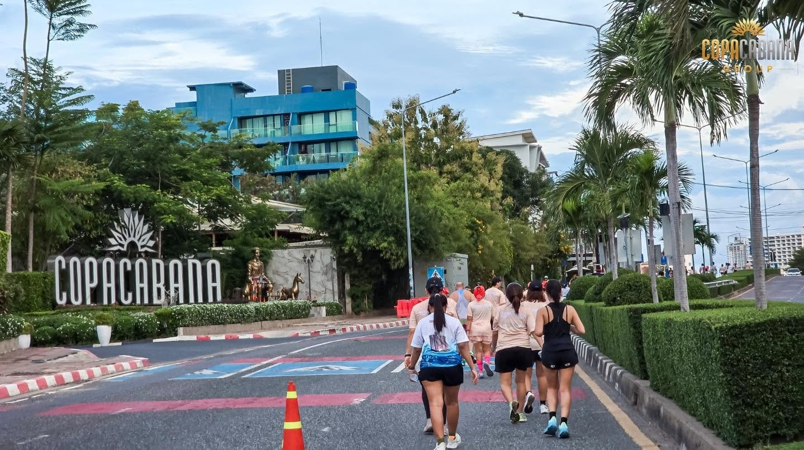
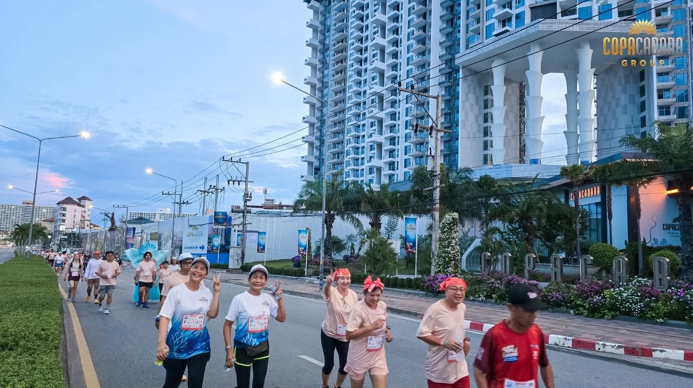
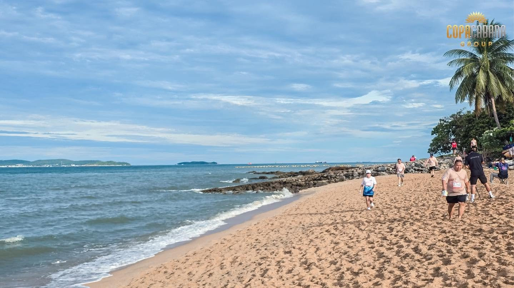
Nine days of yellow flags and vegetarian street food, then one night at the end of the month when the beach runs in costume. เก้าวันของธงเหลืองและอาหารเจข้างทาง ก่อนจะปิดท้ายเดือนด้วยค่ำคืนเดียวที่ทั้งชายหาดออกมาวิ่งในชุดแฟนซี 先是九天的黄旗与素食街头美食，再到月末那一夜——整片海滩换上戏服开跑。 Девять дней жёлтых флагов и вегетарианской уличной еды, а затем одна ночь в конце месяца, когда весь пляж бежит в костюмах.

Nine days of the ninth lunar month, opening with the pole-raising ceremony on 9 October. Chinese shrines across Pattaya fill with processions and ritual, while yellow-flagged stalls take over whole streets — the easiest week of the year to eat well without meat. เก้าวันตามปฏิทินจีนเดือน 9 เริ่มด้วยพิธียกเสาโกเต้งวันที่ 9 ตุลาคม ศาลเจ้าจีนทั่วพัทยาจะคึกคักด้วยขบวนแห่และพิธีกรรม ขณะที่แผงธงเหลืองยึดพื้นที่ทั้งถนน — เป็นช่วงที่หาของอร่อยแบบไม่มีเนื้อสัตว์ได้ง่ายที่สุดในรอบปี 农历九月的九天斋期，以10月9日的竖灯篙仪式揭开序幕。芭提雅各华人庙宇巡游与法会不断，黄旗摊档占满整条街——这是一年中最容易吃得好又全素的一周。 Девять дней девятого лунного месяца, открытие — церемония поднятия шеста 9 октября. Китайские храмы Паттайи наполняются шествиями и обрядами, а лотки под жёлтыми флагами занимают целые улицы — самая лёгкая неделя в году, чтобы вкусно есть без мяса.
📍 Chinese shrines & streets citywide
tourismthailand.org →
Thailand's largest beach run turns ten. The 5K starts and finishes in front of Central Pattaya, setting off against the sunset and carrying on into a moonlit beachfront party — and this year it lands on Halloween night, so costumes are half the point. งานวิ่งริมชายหาดที่ใหญ่ที่สุดในไทยครบรอบ 10 ปี ระยะ 5K เริ่มต้นและเข้าเส้นชัยหน้าเซ็นทรัล พัทยา ออกตัวรับพระอาทิตย์ตกแล้วต่อเนื่องสู่ปาร์ตี้ริมหาดใต้แสงจันทร์ และปีนี้ตรงกับคืนฮาโลวีนพอดี ชุดแฟนซีจึงเป็นครึ่งหนึ่งของความสนุก 泰国最大的沙滩跑迎来十周年。5公里赛道以中央芭提雅为起终点，伴着落日出发，一路延续成月光下的海滨派对——今年恰逢万圣夜，装扮本身就是乐趣的一半。 Крупнейший пляжный забег Таиланда празднует десятилетие. Дистанция 5 км стартует и финиширует у Central Pattaya, начинаясь на закате и переходя в вечеринку на берегу под луной — а в этом году он выпадает на Хэллоуин, так что костюм — половина затеи.
📍 Pattaya Beach · in front of Central Pattaya
pattayaland.com →
From costume nights on Walking Street to haunted-house corners in the shopping malls and themed evenings at hotels and bars, Halloween has become one of Pattaya’s liveliest nights. Pick your level of fright — family-friendly treats in the afternoon, or the full parade after dark. Each venue announces its programme closer to the date. ตั้งแต่ค่ำคืนชุดแฟนซีบน Walking Street มุมบ้านผีสิงในห้างสรรพสินค้า ไปจนถึงปาร์ตี้ธีมฮาโลวีนตามโรงแรมและบาร์ ฮาโลวีนกลายเป็นหนึ่งในคืนที่คึกคักที่สุดของพัทยา เลือกความหลอนได้ตามใจ ตั้งแต่กิจกรรมแจกขนมสำหรับครอบครัวช่วงกลางวัน ไปจนถึงขบวนพาเหรดเต็มรูปแบบหลังฟ้ามืด ทั้งนี้แต่ละสถานที่จะประกาศรายละเอียดใกล้วันงาน 从步行街的变装之夜、购物中心里的鬼屋角落，到酒店与酒吧的主题派对，万圣节已成为芭提雅最热闹的夜晚之一。惊吓程度任你选择——午后的亲子糖果活动，或入夜后的完整巡游。各场地将在临近日期时公布具体安排。 От костюмированных вечеров на Walking Street и «домов с привидениями» в торговых центрах до тематических вечеринок в отелях и барах — Хэллоуин стал одной из самых оживлённых ночей Паттайи. Выбирайте уровень страха: семейные угощения днём или полноценный парад после заката. Программы площадки объявляют ближе к дате.
📍 Walking Street, shopping malls & venues citywideWalking Street ห้างสรรพสินค้า และสถานที่ทั่วเมือง步行街、购物中心及全城各场地Walking Street, торговые центры и заведения по всему городу
Copacabana Coral Reef Jomtien
385/16 Moo 12, Jomtien Second Road
Nong Prue, Bang Lamung, Chon Buri 20150
© 2026 Copacabana Coral Reef Jomtien. All rights reserved. © 2026 Copacabana Coral Reef Jomtien. สงวนสิทธิ์ทุกประการ © 2026 Copacabana Coral Reef Jomtien. 版权所有。 © 2026 Copacabana Coral Reef Jomtien. Все права защищены.